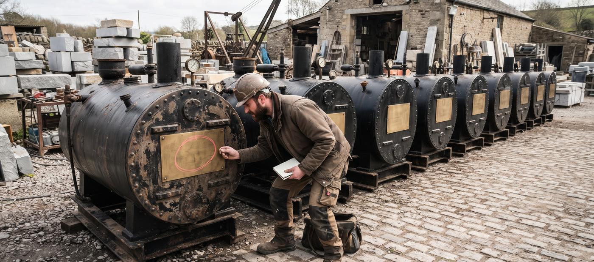

The Plate Inspection. Scans executable files (PE, ELF, Mach-O) to extract metadata such as compiler information, timestamps, imported libraries, and embedded resources, and reports the red flags.
Read the plate closely: what the metal carries is what the scanner extracts, from compiler information and timestamps to imports and embedded resources.
FormatsPE, ELF, and Mach-O executables
Librariespefile for PE, lief for ELF and Mach-O, yara-python for rules
ReportExtracted metadata with potential red flags highlighted; JSON with -o
LicenceMIT License, see LICENSE in the repository
Usage
./artex-executablemetadatascanner [params]
Parameter
What it does
-h
Show help message and exit.
-r
Path to YARA rules file (optional).
-o
Path to save the JSON report (optional).
-v
Enable verbose logging.

Plate after plate, the same inspection: read what is stamped into the file, and chalk what does not sit right.
Stated limits
If a YARA rules file named with -r cannot be compiled, the report carries a yara_error field describing the compile failure and the run exits 1, because the YARA part of the scan was not performed.
A rules file that does not exist also exits 1.
The parameter list names no input file argument; the four documented controls are the ones in the table above.
The scanner covers executable files: PE, ELF, and Mach-O. It is not a general file metadata tool.